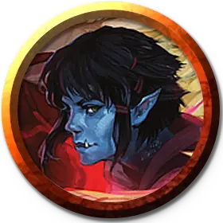

Айо Джабе (2-го уровня)
Ayo Jabe (Tier 2)
Средний Гуманоид (Следопыт, Дженази воды), хаотично-добрый, именной НИП

Класс Доспеха 15 (проклёпанный кожаный доспех)
Хиты 97 (15к8 + 30)
Скорость 30 футов, плавая 30 футов
| мод | спас | ||
|---|---|---|---|
| СИЛ | 14 | +2 | +5 |
| ЛОВ | 16 | +3 | +6 |
| ТЕЛ | 14 | +2 | +2 |
| мод | спас | ||
|---|---|---|---|
| ИНТ | 10 | +0 | +0 |
| МДР | 14 | +2 | +2 |
| ХАР | 12 | +1 | +1 |
Навыки Атлетика +5, Восприятие +5, Выживание +5
Сопротивление урону кислота
Чувства пассивное Восприятие 15
Языки Общий, Гоблинский, Орочий
Опасность 5 (1800 опыта)
Бонус мастерства +3
Особенности
Амфибия. Айо может дышать и воздухом и под водой.
Действия
Мультиатака. Айо совершает три атаки Гарпуном или Длинным луком.
Гарпун. . Рукопашная атака оружием: +5 к попаданию, досягаемость 5 футов, одна цель. Попадание: 11 (2к8 + 2) колющего урона.
Длинный лук. Дальнобойная атака оружием: +6 к попаданию, дистанция 150/600 футов, одна цель. Попадание: 12 (2к8 + 3) колющего урона.
Использование заклинаний. Айо может накладывать следующие заклинания, используя Мудрость в качестве базовой характеристики (Сл спасброска от заклинания 13):
• 1/день каждое: бесследное передвижение [pass without trace], дружба с животными [animal friendship], чудо-ягоды [goodberry];
Реакции
Передислокация. Айо отдает приказ одному союзнику, которого она может видеть в пределах 30 футов. Если он может видеть или слышать Айо, он может использовать свою реакцию, чтобы переместиться на свою скорость. Это перемещение не провоцирует атак.
Описание
Как фактический лидер новой, еще неназванной группы приключенцев, Айо Джабе несёт на своих плечах большую ответственность. Она и её спутники уже несколько недель подрабатывают в окрестностях города Джигау, и она начинает чувствовать уверенность в том, что они готовы к настоящим приключениям.
Айо - дженази воды, которая родилась у родителей-орков во время ужасного шторма в Изумрудном заливе. Её семья жила в Джигау на протяжении нескольких поколений, и ей не терпится покинуть дом и повидать мир.
Айо приобрела свои боевые навыки, работая охотником в городе Джигау. Недавно она присоединилась к своему другу детства Дермоту, а также к Мэгги Кинайс, наемнице, которая приехала в город несколько недель назад. Несмотря на грубый облик Мэгги, она стала верным другом Айо и Дермота, и они втроем стали неразлучны, несмотря на то, что к их компании присоединилось еще больше искателей приключений.
Айо вспыльчива и ценит людей, которые принимают решения так же импульсивно, как и она. Тем не менее, она уважает уравновешенный совет Дермота и послушно играет роль мудрого лидера. У нее нет терпения к нерешительным людям, и её бесят люди, которые говорят не то, что они на самом деле имеют в виду.
Примеры высказываний в бою
"О'кей, команда, они сбиты с толку. Нападай!" "С тебя хватит?" "Да, просто сдавайся. С тобой покончено."
Уровни Соперников
По мере того, как персонажи повышают свой уровень и получают новое снаряжение в ходе этого приключения, соперники набирают силу. Каждый соперник представлен тремя блоками характеристик.
СОПЕРНИКИ 2-го уровня
Соперники 2-го уровня уже знают, что их приключения заводят их в ужасные места, которые проверят их отвагу, но они сталкиваются с этими проблемами с высоко поднятой головой.